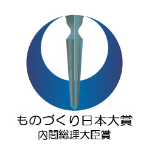
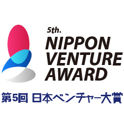
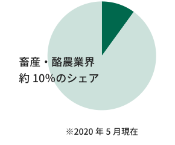
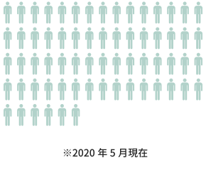

私たちらしくやる
働き方のスタンス
リモートでもコミュニケーションは密に
もともと複数拠点・複数の事業体で連携して活動しているため、リモートワークでも円滑にコミュニケーションをとれる社内環境や体制がととのっています。デイリーMTGや毎週の全社MTGもオンラインで実施しています。また、最近ではリモート飲み会やリモートヨガ、リモート読書会など、社員からさまざまな企画が開催されています。
新たな局面にスピーディーに対応していく
今回の新型コロナウイルスによる緊急事態に臨み、社長からの全社員へどう意志を持って行動していくのか直接メッセージがありました。また在宅勤務での環境を整え、リモートでも懇親が深められるよう、一時補助金も支給しました。いつもと違う状況だからこそ新しい発見や気づきがあるはず。これを機会ととらえて、新しいアイデア・ビジネス・働き方を生み出しいこうという姿勢で業務に臨んでいます。
つながり、個人の成長を
後押しする取り組み
-
1 to 1
メンバー自身が話したいことを上司が徹底的に聴く場であり、メンバーの成長を促すための時間。内容は、悩み、最近の出来事、考えていること、目指しているもの、など何でも。
-
四半期表彰
四半期ごとに、Connected・Bold・Professionalの3つのValueをそれぞれ体現した人をグループ全体で表彰。受賞者にはご褒美も。
-
新入社員
半年間の研修・OJT期間を設けており、複数の業務を体験し会社や仕事についての理解を深めていきます。その後の配属は本人の希望を最大限尊重して決定します。
-
社長面談
全社員と社長との個別面談が半年に1回ある。社長から直接フィードバックがあり、本人の成長にとって必要なことは何なのか、ヒントを伝えています。また自分の想いや意見を直接社長に伝えられる機会でもあります。
-
コーチングトレーニング
経営陣・マネージャーはコーチングの手法を学んでおり、それを活かしてメンバーとの1to1に臨んでいます。マネージャーが起点になりメンバーの成長を促せるような支援をしています。
-

ビジョナリーリーダーズ
希望する社員を対象に社長が開催している塾。自分の実現したいことを、周りの力を借りながら進めるリーダーシップを身に付けることを目的としています。自分自身を深く内省し、参加者と一緒に気づきや学びを共有しながら深めていきます。
採用に関する取り組み
-
web面談・面接
新型コロナウイルスの状況下ではもちろん、平常時でも遠方の場合やご本人のご都合に合わせてweb面談・面接を実施しています。
-
入社時のサポート
転居を伴う勤務地の場合は、ご本人およびご家族の移動費と引越し費用を負担しています。新しい場所でも早く馴染めるよう、メンバーでサポートしていきます。
Boldに、広がる活躍の場
Farmnoteホールディングスでは多種多様な職種のメンバーが活躍しています。
3つのValueを体現し、チャレンジし続ける中で新たな領域のチームが生まれていっています。
-
獣医師
-
データサイエンティスト
-
フロントエンドエンジニア
-
バックエンドエンジニア
-
データエンジニア
-
ディレクター
-
プロダクトマネジャー
-
セールス
-
カスタマーサポート

受賞履歴
-
ものづくり日本大賞
内閣総理大臣賞 -
日本ベンチャー大賞
農林水産大臣賞
何をやるのか
世界の農業の
頭脳を創る。
テクノロジー（データ解析とUX）を通じて、強い農生産を実現します。「牧場を、手のひらに。」をコンセプトにスマートフォンでかんたんに牛群管理ができるアプリ「Farmnote Cloud」、AIを通じて牛個体の行動データから牛の状態の見える化や異常検知をするセンサー「Farmnote Color」を提供し、牛の一生が1分1秒でも健やかであることに貢献します。
生産者にとってインパクトのある気づきをデータによって導き出し、効率的で生産性の高い牧場経営を支援します。世界の生産現場で起こる生産課題を解決し、世界を代表するITソリューションカンパニーとなります。
株式会社ファームノート
食・動物とつながる
-
契約頭数
387,000頭
 -
社内メンバー構成
66名

新しい
酪農の形を創る。
ファームノートグループの自社牧場を立ち上げ、酪農畜産領域におけるインターネット技術の発展に貢献に加え、インターネット技術だけではアプローチできない課題へのアプローチを行い、新しい酪農畜産の形を作ります。酪農家戸数は毎年４～5％ずつ減少し、業界全体が縮小傾向にあります。生産者に外からアプローチするだけでなく、自らが生産者となることで内外から酪農畜産業界の活性化を加速させます。
ファームノートデイリープラットフォーム
伝えるを、もっと
「かんたん」に。
インターネット技術を活用し、「伝える」を革新し、明るく元気になる仕組みに貢献します。
「社員が会社のファンになる」をコンセプトに、企業の価値観共感を支援し、社員の方々がパワフルに仕事ができる世界を願う「社内報アプリSolanowa」、安心・安全の環境で「伝える」ことを支援するソリューション事業を通じて、企業のコミュニケーション課題を解決し、企業と人のアーク（架け橋）となります。
株式会社スカイアーク
人・社会とつながる
-
soranowa利用者数
137,631名
-
社内メンバー構成
21名